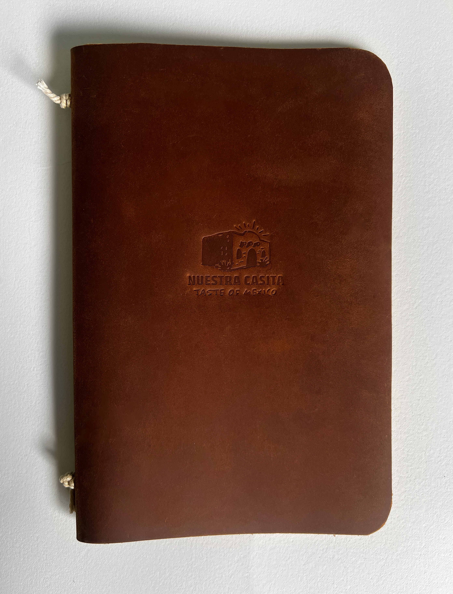
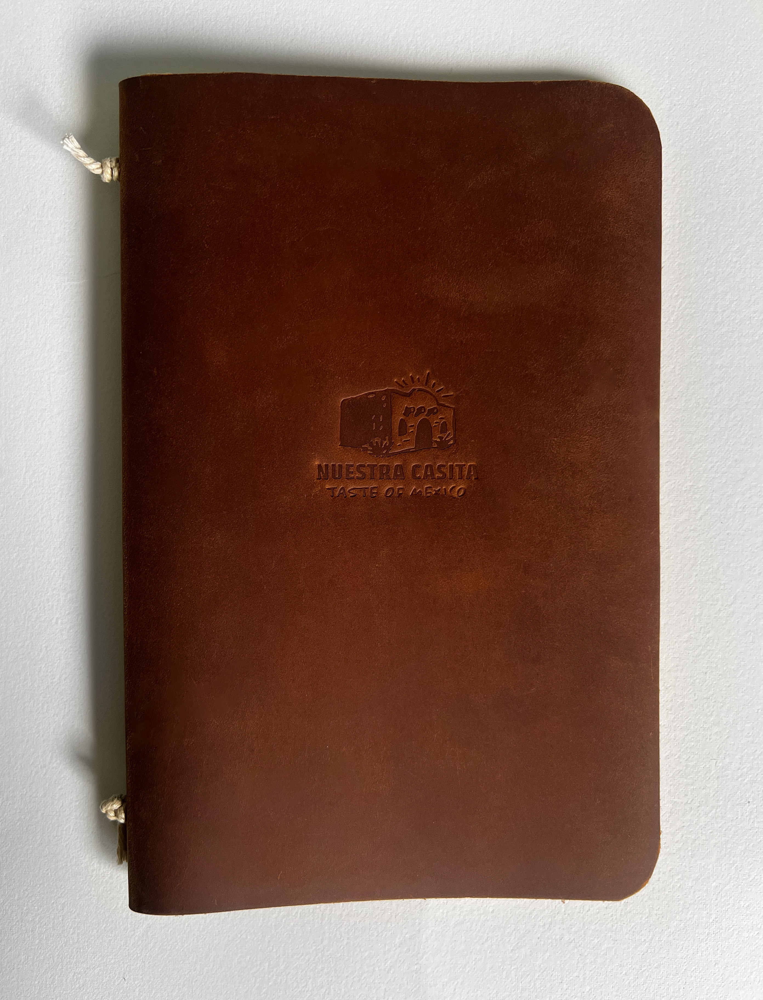

Nuestra Casita
BRAND IDENTITY PROJECT

Menu Design
Social Media Content
Menu (12"x9")
Instagram Assets
Illustrator
Figma
OVERVIEW
Experience the warmth of "Nuestra Casita"
"Nuestra Casita" is an authentic, homey, and family-friendly Mexican restaurant located in Los Angeles, California. Inspired by the vibrant and colorful culture of Mexico, the brand identity captures the essence of a warm and welcoming Mexican home.
The designs feature a consistent use of playful, hand-drawn-style fonts and illustrative elements to evoke the friendly and casual ambiance envisioned by Nuestra Casita. Additionally, rugged textures are incorporated throughout the brand to reinforce the theme of authenticity.
MOODBOARD
Setting the creative direction
I began the project with the creation of a moodboard. By curating a collection of images, colors, and textures, the moodboard provided a cohesive overview of the intended aesthetic, ensuring that every design decision aligned with the welcoming and genuine spirit of Nuestra Casita.
Vibrant colors were chosen to emphasize the family-friendly atmosphere, inspired by the bright traditional houses and festivities of Mexico. Textures were incorporated to enhance the sense of authenticity, reflecting the rugged, genuine materials found in traditional Mexican architecture and decor. Fun, playful illustrations were added to reinforce the welcoming and homey feel of the brand. Additionally, images of hands sharing food plates highlight the importance of familism in Mexican culture, aiming to make visitors feel the warmth and hospitality of a Mexican home.
LOGO
Crafting the logo concept
During my sketching phase, the restaurant's name was still undecided between "Nuestra Casita" (meaning "Our Little Home") and "Mi Tierra" (meaning "My Homeland"). Ultimately, I chose the name "Nuestra Casita" to emphasize the family-friendly and homey atmosphere.
My logo sketches featured iterations of traditional Mexican homes and architecture. Additionally, playful and friendly typography was explored, alongside traditional Mexican patterns and environmental "homeland" elements such as cacti and sun rays.

LOGO
Three logo options
From the logo sketches, I digitized three options to choose from. The three options focused on iterations of the traditional Mexican home to directly connect to the idea of a warm, inviting and friendly ambiance.

LOGO
Selecting the final logo
I chose the third logo for its successful integration of rugged typography and "authentic" textures. This option was also the best in reinforcing the restaurant's cultural identity by featuring arches (from traditional Mexican architecture), sun rays (commonly found in Mexican arts and culture), and agave-style plants (which suggest the hot climate of Mexico). I also decided to give the logo name a drop-shadow to provide depth and create a better sense of tactile and texturized mark.

MENU
Designing the menu
I decided on a bi-fold format for the menu, designed to fit within a soft leather menu cover. The menu design featured fun hand-drawn doodles to maintain the family-friendly identity and ensure visual cohesion with the sketchy style of the logo.
I selected textured paper, cotton fastening rope, and an embossed logo for the soft leather cover to complement the textures seen throughout the brand, enhancing the warm, homey, and authentic feel.
 

INSTAGRAM ASSETS
Crafting instagram assets
In the final step, I created an Instagram page for Nuestra Casita. The restaurant's profile showcases how brand illustrations, subtle textures, colors, images, and fonts are cohesively implemented.